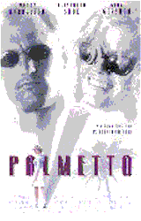

Contents | Features | Reviews | News | Archives | Store |
 |
|
| Movie Credits | Buy It! |
Palmetto
Review by Elias Savada
Posted 20 February 1998
|  | Directed by Volker Schlondorff Starring
Woody Harrelson, Elisabeth Shue, |
Director Volker Schlondorff, best known for his Academy Award winning 1979 adaptation of the Gunter Grass novel The Tin Drum, is an odd choice for the thematically-crippled Palmetto, a half-hearted sultry gumshoe noir piece that will quickly fall by the wayside. Schlondorff apparently likes to watch movies that offer suspenseful chills and thrills. His problem is that he can't direct films with suspenseful chills and thrills.
It's hot and humid in one of those sleepy and steamy hamlets in South Florida, but there's no snap, crackle, or pop with this lukewarm adaptation of a James Hadley Chase novel. Consider it Body Heatless. In that 1981 film a truly sexy Kathleen Turner comments that "You're not very bright.... I like that in a man." The dummy in Palmetto is jailed newspaperman Harry Barber (Woody Harrelson), released after a two-year stint for a bogus frame-up by corrupt local politicians. He's "just another sucker," to take the name of the original book title adapted by E. Max Frye (Something Wild, Amos & Andrew). Or maybe the moniker refers to those of us left in the audience as this film stumbles to a close two hours later. For the most part, Harry's in way too deep when it comes to the opposite sex, but manages to pull up his pants and escape nearly unscathed by the final fade out. Author Chase (a nom-de-plume for late British pulpster Rene Raymond) was a prolific author respected for his detective and criminal fiction. Although his books have been adapted into at least 26 movies, unless you're a fan, you probably can't recall any of this other adaptations. Palmetto won't make you rush out to view these older obscure titles.
Harry reluctantly returns to the titular town in the Florida Keys to share an uncertain future with successful metal sculptress Nina (Gina Gershon), an old flame who welcomes the apparent loser back to her bed. His attempt to regain any sense of self esteem (he refuses to deliver Nina's "scrap metal" to her clients) takes a turn south when the voluptuous Rhea Malroux (Elisabeth Shue) entices the weak-spirited, "predictably dishonest" Harry to become part of a fake kidnap scheme involving her hot and bothered teen-bait step-daughter Odette (Chloe Sevigny) and the rich but dying Mr. Malroux. Shue may have a shapely figure (no doubt enhanced by her early stages of pregnancy while filming), her acting is just a touch above her fusion-defying performance in last year's The Saint. I will admire her for her choice of alcoholic diversion – a vodka martini with a twist, but fault her for her slide from the greatness she exhibited in Leaving Las Vegas.
As the story unravels, Harry realizes that not everything is as it appears to be and not everyone is as they should be – in spades. District Attorney John Renick (Tom Wright), Nina's brother-in-law, comes off as one of the unintentionally dumbest law enforcement official when, despite what should be a gut feeling that all is not kosher with Harry, he hires the completely flummoxed hack to deflect the press in their ever escalating thirst for details on the aborted abduction. A dead body or two later and some intervention by Donnelly (Michael Rapaport), a former cop and now manservant in the Malroux household, pushes the film to a climax that dissolves away more than you may want to see.
As Shue's character is brought down to earth, she's up in the ozone, seemingly auditioning for the role of Norma Desmond in Sunset Boulevard. I half expected a colorized Erich Von Stroheim to make a cameo appearance, but he wisely stayed away (hey, he's dead anyway).
Gershon, delighted because she finally got to play "the healthiest person in the movie," has been more often cast as a strong-willed moll (Face/Off and Bound) or a heartless bare-skinned beauty (Showgirls). She gets third-billing, but she's tops on my list with her brief but sharp depiction of the sensible girlfriend who manages to see beyond the frailties of her significant other. At one point, as she finds herself unwittingly drawn into Harry's sinkhole, she consults the only knowledgeable source to deal with difficult situations like this – an 8-ball. Something tells me the filmmakers got suckered by the black orb when they asked it, if they made this movie would anyone come.
Contents | Features | Reviews | News | Archives | Store
Copyright © 1999 by Nitrate Productions, Inc. All Rights Reserved.